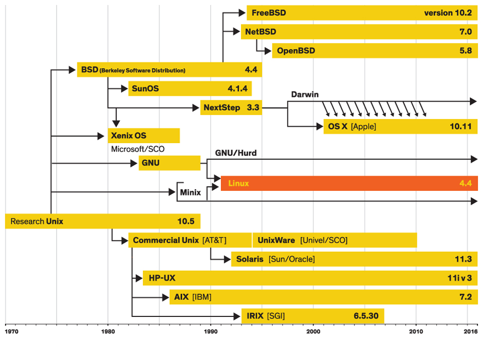

Cos'é l'Open Source e le community

Daniele Scasciafratte
- Co Founder Codeat - Full Stack Developer
- Mozillian & Mozilla Reps & Participation Leader
- Autore per AndMore, ChimeraRevo e TechEconomy
- Utente Debian Linux dal 2009
- WordPress Contributor/Developer/Translator
- Open Source Addicted
- Industria Italiana Software Libero Vice President
La mia esperienza
Traduzioni -> Supporto Contributi da sviluppatore -> Promozione Reclutamento -> Oggi
Open Source
“Open source (termine inglese che significa sorgente aperta), in informatica, indica un software di cui gli autori (più precisamente i detentori dei diritti) rendono pubblico il codice sorgente, favorendone il libero studio e permettendo a programmatori indipendenti di apportarvi modifiche ed estensioni. Questa possibilità è regolata tramite l'applicazione di apposite licenze d'uso.”
Open Source
Libertá di utilizzare il programma per ogni tipo d'uso
Hai accesso al codice sorgente, libertá di studiarlo e di modificarlo
Libertá di distribuirlo
Libertá di distribuire copie modificate a chiunque

Open Source = Sorgente aperto
Free Software = Software libero
Es: Un programma puó essere Open Source dietro pagamento ma non software libero
Perché é nato
Condivisione delle conoscenze informatiche
Liberi da regole fortemente limitative
Diffusione senza limiti
Collaborazione per migliorare il progetto

Progetti di condivisione dati
Wikipedia
OpenStreetMaps
WikiToLearn
Mozilla Science
WikiLeaks
Seti@Home, Rosetta@Home, Folding@Home
BitCoin
Progetti collaborativi
GNU Health
WiiLDos
Ubuntu, Debian, Fedora
OpenWRT
Arduino
VLC
Cos'é Linux
Dove si usa
500 Super computer - 75% usa Linux
Rendering dei film - Disney/Pixar, DreamWorks, Sony
Internet - Cisco, Netgear, D-Link
Smartphone - Android, Ubuntu Phone
Giochi - Lego Mindstorm NXT
Aziende - Google, Apple, Facebook, Twitter ecc
Le community
Aperto a tutti
Differenti culture, stesso obiettivo
Conosci nuove persone
Ognuno fa del suo meglio
Condivisione delle proprie competenze
Formazione personale
Linux User Group